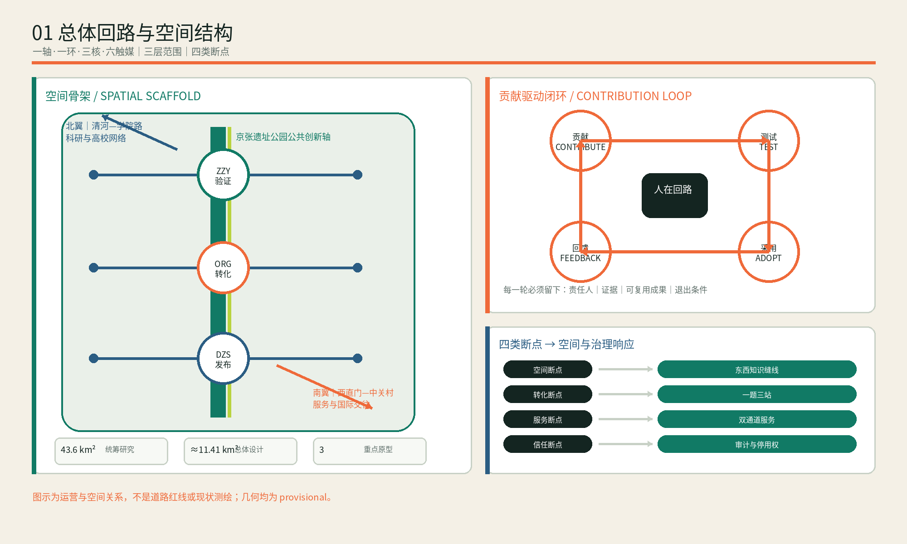
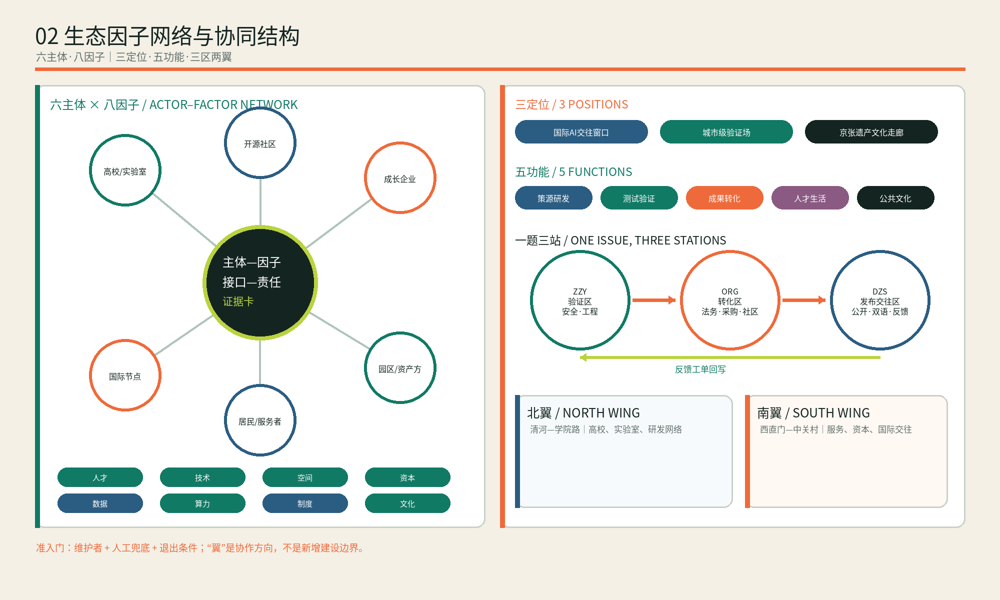
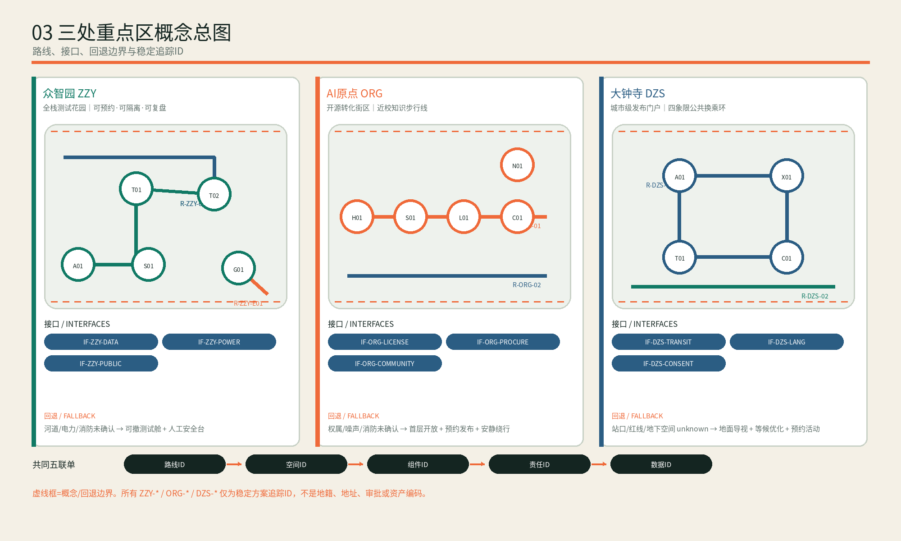
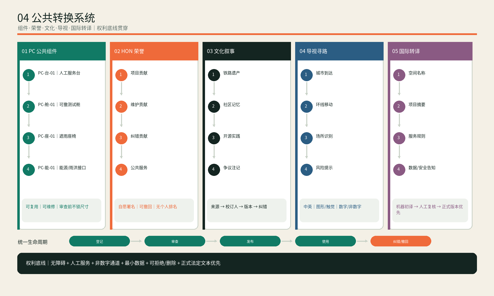
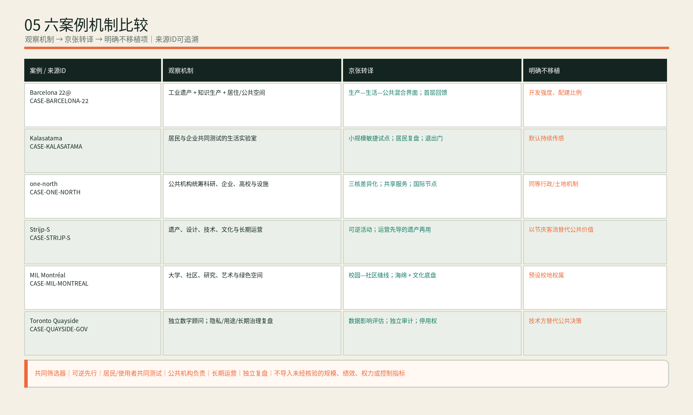

众智园
验证区 · VALIDATE
- 隔离测试庭与生态缓冲
- 人工安全台与关停方案
- 输出 VALIDATION-PACK
以遗址公园为公共轴，以众智园验证、AI原点转化、大钟寺发布为三处贡献脉冲，让每个AI城市议题都有准入、验证、采用、发布、回写和退出证据。
来自 metrics.json 与提交 GeoJSON；不等于审定控规指标，正式边界到位后须重算。
未闭合环允许进入、纠错与退出；铁路双线叠合南北遗产连续性和东西知识缝线；贡献脉冲让反馈可见。
同一议题依次通过安全/工程验证、许可/采购/社区适配、公开发布/国际转译，再把反馈回写。
三处范围均为 provisional。路线、空间、组件、责任与数据ID仅用于方案追踪，不是地址、地籍、审批或资产编码。
机器可读主版本：assets/implementation-chain.json。每道门都给出输入、责任、输出与失败动作。
需求、维护者、空间载体、公共利益、退出条件。
缺项：不进入公共场景隔离测试、安全复测、数据清单、负荷与关停。
失败：修复、复测或关闭许可、采购、社区异议与人工兜底。
失败：缩小范围或停试双语、无障碍、知情选择、删除与退出。
失败：退回 G2 修订问题、接管、事故和维护能力年度复盘。
决定：继续 / 调整 / 退出图件帮助评审理解；几何、指标和矩阵仍是复算与合规主证据。





快速判断“可相信什么、仍缺什么、变化后重跑什么”。
三处重点区、五道决策门、交接材料、责任角色、分期前置条件、失败回退均见 implementation-chain.json。
正式边界、控规、权属、道路红线、市政管线、防洪、消防、文保、交通容量与资金承诺。
四类 Gate 结果由 self_check.json 持久化；本驾驶舱不自行声称审批或工程可行。
正式资料替换后重跑：几何 → 指标 → 实施链接口 → 五图 → HTML/PDF → 自检。
来源与假设：sources.json、assumptions.json；任务覆盖：compliance_matrix.json；设计深度：design_depth_matrix.json。